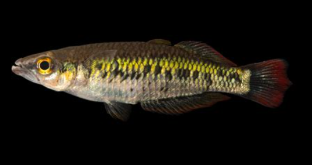

Systématique
- Ordre : Atheriniformes
- Famille : Bedotiidae
- Genre : Bedotia
- Espèce : B. marojejus

Bedotia marojejus est un poisson de la famille des Bedotiidae, endémique de la région nord-est de Madagascar. Décrite en 2000 par Stiassny et Harrison, cette espèce tire son nom du massif du Marojejy, à proximité duquel elle a été collectée pour la première fois. Elle est étroitement liée au complexe d'espèces de la côte Est, mais s'en distingue par des caractères ostéologiques et des motifs de coloration précis.
Le corps est fusiforme et svelte, typique des nageurs de pleine eau. Les spécimens adultes atteignent une longueur standard d'environ 9 cm. La livrée présente une bande médio-latérale sombre bien définie, surmontée d'une zone irisée dorée ou argentée. Les nageoires des mâles arborent des teintes rouges à rougeâtres sur les bords, particulièrement visibles sur la deuxième dorsale et la nageoire anale. C'est une espèce rare en aquariophilie, principalement maintenue par des spécialistes des espèces malgaches.
Bedotia marojejus est une espèce grégaire et paisible qui nécessite la présence d'un banc pour se sentir en sécurité. C'est un poisson actif qui passe la majeure partie de son temps dans les courants modérés à la recherche de nourriture. Il occupe la strate supérieure et moyenne de l'aquarium.
En groupe, une hiérarchie s'établit entre les mâles sans agressivité notable. Ils se contentent de parades latérales impressionnantes pour impressionner leurs rivaux. L'espèce est sensible à la qualité de l'eau et aux changements brusques de paramètres. Elle nécessite un bac bien couvert car, comme tous les Bedotiidae, elle est encline à sauter lorsqu'elle est surprise ou durant les périodes d'activité intense.
Mode : Ovipare, pondeur sur substrat végétal ou fibreux (mops).
La reproduction suit le schéma classique du genre Bedotia. La parade nuptiale est vive : le mâle poursuit la femelle avec les nageoires déployées. La ponte est fractionnée, la femelle déposant quotidiennement quelques œufs adhésifs. Les œufs sont fixés aux plantes ou aux racines par de fins filaments.
L'éclosion a lieu après environ 7 à 10 jours à une température de 24 °C. Les alevins sont minuscules et restent initialement près de la surface. Ils nécessitent une alimentation très fine (infusoires, plancton de mare) durant les premiers jours avant de pouvoir consommer des nauplies d'artémias. Il est recommandé d'isoler les œufs pour maximiser le taux de survie.
Dimorphisme sexuel : Le mâle est plus grand, plus coloré et possède des nageoires impaires plus développées et pointues que la femelle. Les liserés rouges sur les nageoires sont beaucoup plus prononcés chez le mâle en période de frai. La femelle est globalement plus terne avec un corps plus rebondi au moment de la production d'œufs.
Espérance de vie : 3 à 5 ans en conditions optimales de maintenance.
L'espèce est endémique des bassins versants du nord-est de Madagascar, notamment dans les environs du fleuve Lokoho. Elle fréquente les ruisseaux et rivières de forêt tropicale humide, là où l'eau est claire, bien oxygénée et coule sur des fonds de sable, de graviers ou de roches jonchés de débris ligneux.
Le biotope est caractérisé par une eau douce et légèrement acide. La température y est relativement stable, oscillant entre 22 et 26 °C. La survie de cette espèce à l'état sauvage est intimement liée à la préservation des forêts primaires entourant le parc national de Marojejy, la déforestation entraînant une sédimentation fatale aux sites de ponte.
Répartition

Origine naturelle :
- Madagascar : Endémique du Nord-Est.
- Localité type : Bassin du fleuve Lokoho, près de Maroantsetra.
- Distribution restreinte aux cours d'eau de forêt pluviale de basse et moyenne altitude.
Classée comme espèce Vulnérable (VU) en raison de l'étroitesse de son aire de répartition et des menaces pesant sur son habitat.
Paramètres de maintenance
Température : 22 à 25 °C (évitez les températures prolongées au-dessus de 27 °C).
pH : 6.0 à 7.2.
GH : 2 à 10 °dGH.
Courant : Modéré; nécessite une filtration efficace assurant une eau limpide.
Volume conseillé : Minimum 150-200 L pour un groupe d'une dizaine d'individus, avec un espace de nage suffisant.
Régime alimentaire
Régime : Omnivore à dominante carnivore (insectivore).
En milieu naturel, il se nourrit principalement d'insectes de surface et de petits invertébrés aquatiques.
En aquarium, il accepte les nourritures sèches de qualité. Cependant, l'apport de nourriture vivante ou congelée (artémias, daphnies, cyclops) est essentiel pour maintenir l'éclat de ses couleurs et sa santé générale. Il se nourrit presque exclusivement en surface ou en pleine eau.